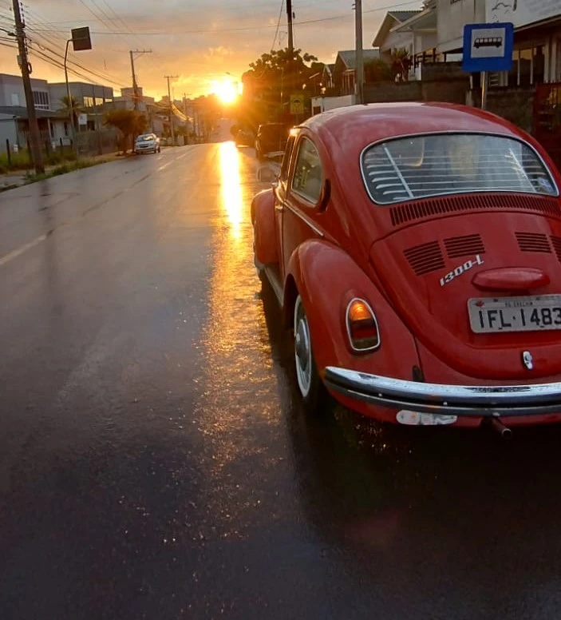
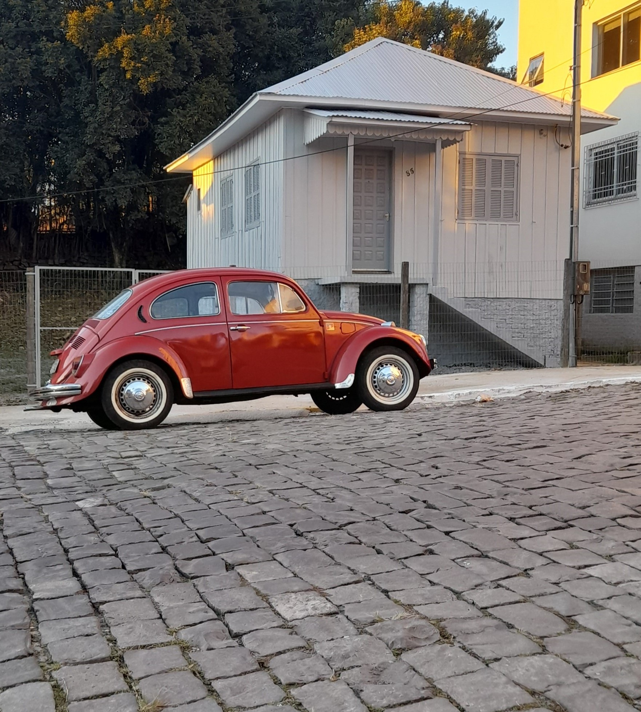

Fusca Maragato
O Fusca mais lindo do Brasil!


O que ser fusqueiro faz por você
1. História viva: O fusca carrega tradição, charme e identidade como nenhum outro carro.
2. Mecânica na veia: Ser um fusqueiro é aprender, na prática a aprender a cuidar do que é seu.
3. Comunidade forte: Onde há um Fusca, ha união, amizade e ajuda na estrada.